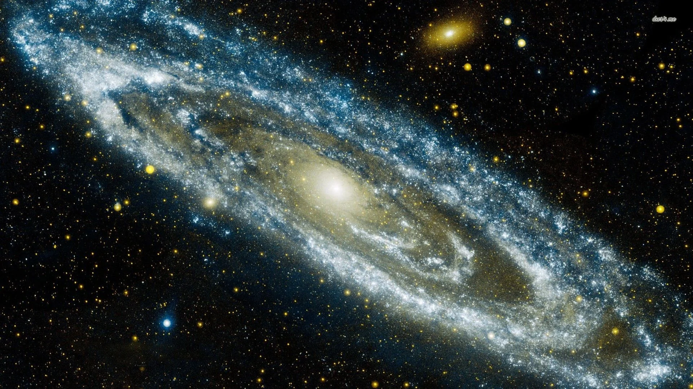
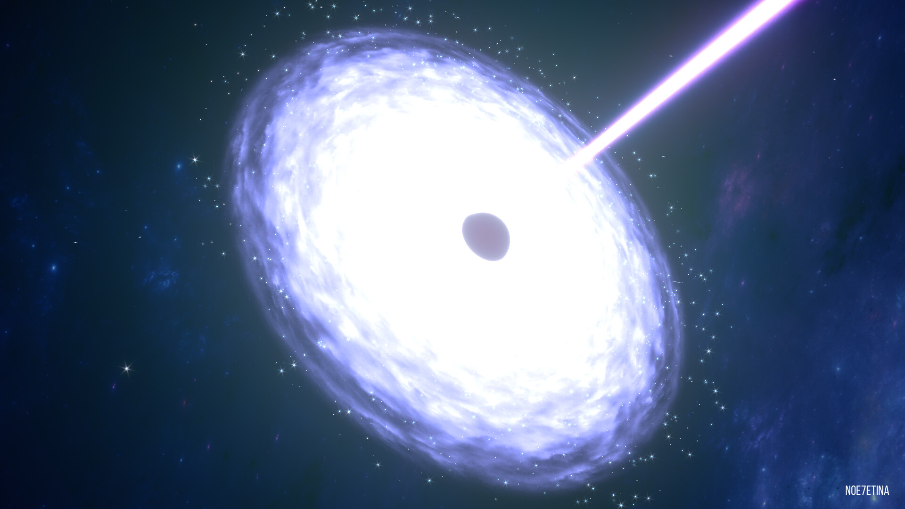
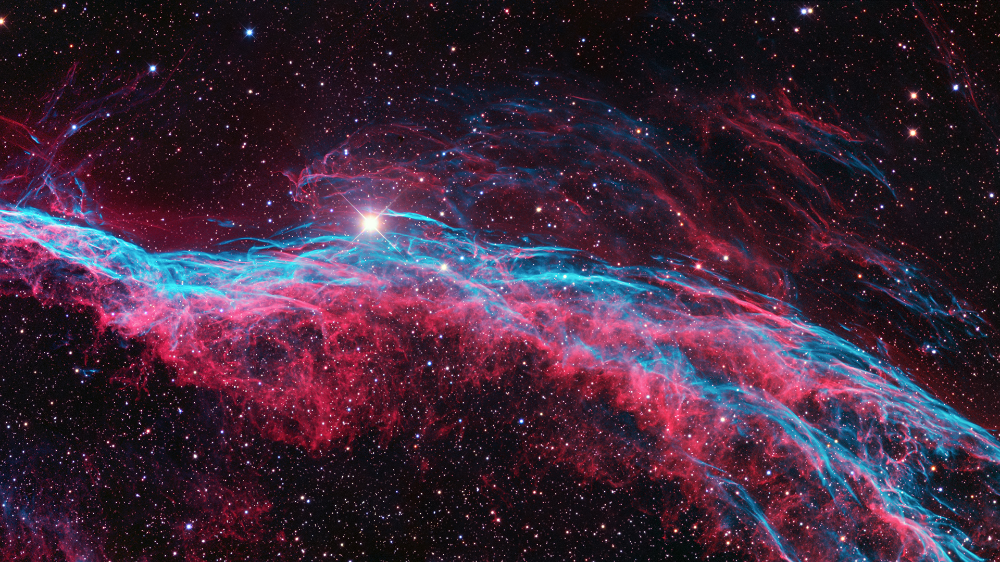
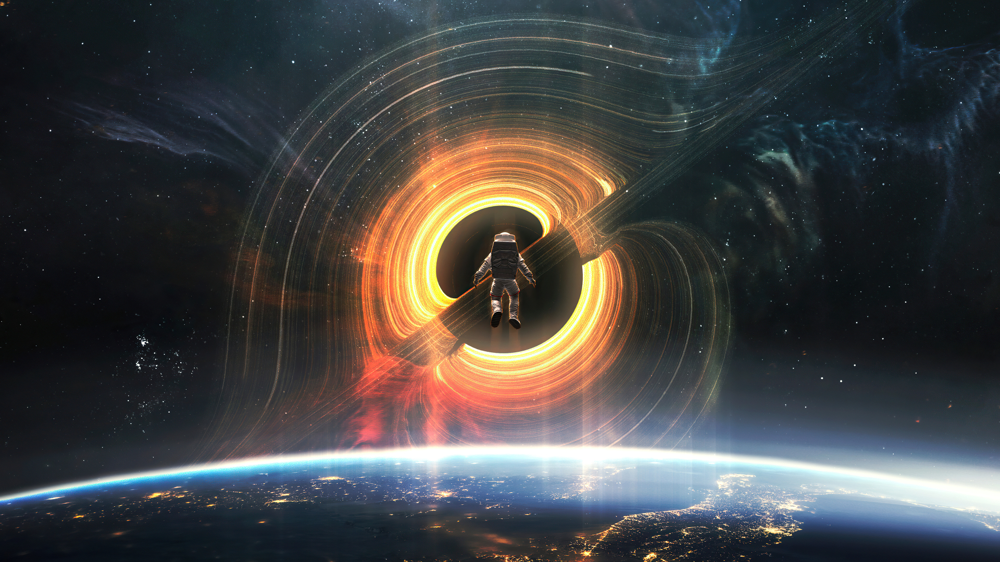

-

Galáxia M31
M31, também conhecida como Galáxia de Andrômeda, é uma galáxia espiral barrada localizada a cerca de 2,5 milhões de anos-luz da Terra, na constelação de Andrômeda. É a galáxia principal mais próxima da Via Láctea e pode ser vista a olho nu em áreas com pouca poluição luminosa.
-

Quasar TON 618
TON 618 é o nome de um quasar extremamente luminoso e um buraco negro supermassivo, considerado o maior conhecido até o momento. Este objeto cósmico está localizado a cerca de 10,4 bilhões de anos-luz da Terra, na constelação de Canes Venatici. A massa do buraco negro em TON 618 é estimada em 66 bilhões de vezes a massa do Sol.
-

Nebulosa NGC 6960
NGC 6960 é um remanescente de supernova na direção da constelação de Cygnus. O objeto foi descoberto pelo astrônomo William Herschel em 1784, usando um telescópio refletor com abertura de 18,6 polegadas. Dado o seu formato também é conhecida como Nebulosa do Véu ou Nebulosa Vassoura de Bruxa
-

Interestelar
Nessa profunda obra espacial de Christopher Nolan, Mathew McConaughey e Anne Hathaway juntam-se a Jessica Chastain, Ellen Burstyn e Michael Caine na renomada tripulação de uma equipe de exploração do espaço que realiza o impossível ao viajar por um buraco de minhoca recém-descoberto, ultrapassando os limites das viagens espaciais humanas e entrando numa dimensão completamente diferente.
-

Via Láctea
A Via Láctea é a galáxia onde está localizado o Sistema Solar, e onde vivemos. É uma galáxia espiral com um diâmetro estimado de cerca de 100.000 anos-luz. Ela contém bilhões de estrelas, poeira e gás, além de corpos celestes como planetas e asteróides.